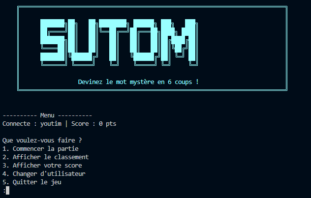
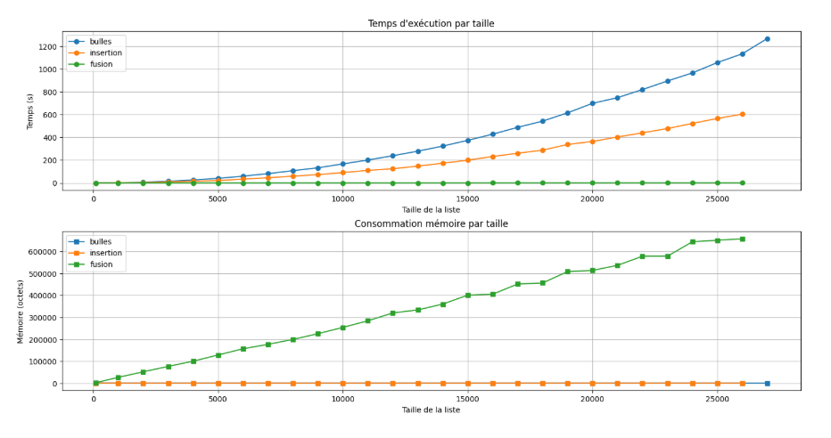

Bougrini Hatim
/\_/\
( o.o )
> ^ <
Défilez vers le bas pour en savoir plus sur moi.
Un apprenti développeur
[Insérer un texte ici quand l'inspiration se fera sentir]
Autonomie
Recherche & Apprentissage
Capacité à trouver des solutions par la lecture de documentation technique et l'auto-formation.
Rigueur
Méthodologie
Respect des conventions de nommage, application de tests unitaires et précision dans le requêtage SQL.
Esprit d'équipe
Collaboration
Expérience de travail en binôme (Pair Programming) et communication fluide lors des projets collectifs.
Curiosité
Apprentissage continu
Intérêt pour les nouvelles technologies et l'apprentissage continu.
Développement
Python, SQL, Bash
Conception d'applications encore en cours d'apprentissage au sein de l'IUT du Limousin.
Systèmes
Linux / Scripting
Maîtrise de l'environnement Linux, manipulation de fichiers et création de scripts Shell pour l'administration système.
Versionnage
Git / GitHub / GitLab
Suivi de modifications de code, gestion de branches et collaboration sur des dépôts distants (GitHub).
Algorithmique
Logique & Structures
Étude de la complexité des tris via observation des coûts en temps et en mémoire, optimisation des performances.
Environnement
Debian / VS Code
Installation et configuration complète de postes de travail virtualisés. Pour configurer l'accès au système de gestion de la bibliothèque.
Web
HTML5 / CSS3
Élaboration lors de TD/TP de site web en cours d'apprentissage au sein de l'IUT du Limousin.
Réalisation d'une application complète du jeu SUTOM. Gestion d'un dictionnaire de mots, typage statique rigoureux et système de scores par niveaux de difficulté.
Rigueur : Utilisation systématique de préconditions et postconditions.
Travail d'équipe : Collaboration efficace en binôme.

Étude comparative de l'efficacité (temps et mémoire) des tris (Bulle, Insertion, Rapide) pour optimiser le prétraitement de données de Machine Learning.
Esprit Critique : Interprétation scientifique des résultats de benchmark.
Synthèse : Présentation orale des résultats techniques.

Installation de Debian virtualisée et développement d'un système Shell de gestion de bibliothèque (scripts d'inscription, d'emprunt et de rappel automatique).
Méthodologie : Respect des procédures d'installation.
Sécurité : Vigilance sur les accès et la confidentialité.
[Capture : Terminal Linux Debian SAÉ 1.03]
Mise en place d'une BDD relationnelle sur les ventes de jeux vidéo. Analyse de l'existant et production de graphiques via SQLPad.
Analyse : Capacité à proposer des extensions à un modèle existant.
Rigueur : Cohérence des données relationnelles.
[Image : Schéma Relationnel / Graphique SQLPad]
Définition des besoins pour une application Web de gestion des prêts. Identification des fonctionnalités et priorisation selon la méthode MoSCoW.
Empathie : Analyse du point de vue utilisateur.
Communication : Rédaction de documentation technique claire.
[Tableau : Synthèse MoSCoW]